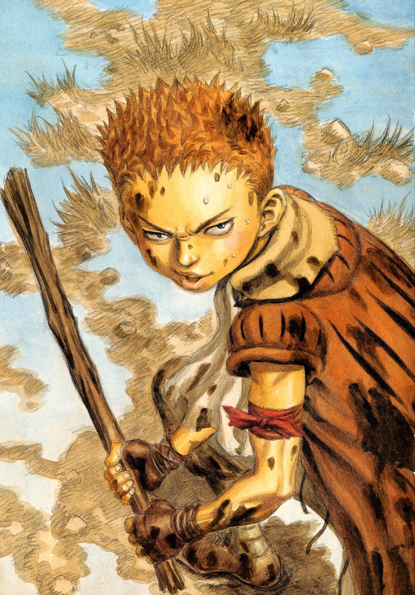

Nome: Ishidoro
Sexo: Masculino
Afiliação: Novo Grupo do Guts
Ishidro é um menino ladrão que é fugitivo e se juntou ao Guts e faz parte do Novo Grupo do Guts.
Aparência
Ishidro é um menino baixo e magro de pele bronzeada e cabelos ruivos. Ele usa um casaco marrom com mangas curtas por cima de uma camisa verde oliva com alguns buracos e uma calça cinza. Entorno das canelas amarrou umas bandagens e no punho também; em volta do braço esquerdo, um tecido vermelho.